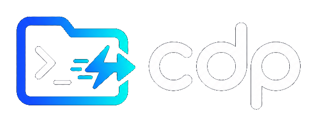

Vibe Coding / terminal flow
PowerShell
PS C:\> cd E:\Work\Client Projects\VeryLongName\backend
PS E:\Work\...\backend> cd ..\..\..\SideProjects\tooling
PS E:\SideProjects\tooling> cd C:\Learn\another-project
#
flow interrupted
27
path fragments typed before the work even starts
too much navigation
AI coding lives in the terminal. Project switching should not break flow.
One command. Full workspace.
Switch projects. Launch Codex.
PowerShell / cdp v1.8.0
PS C:\Work>
OK
Switched to project: my-api
RUN
Opening with Codex...
Launcher presets
codex
AI CLI
claude
AI CLI
gemini
AI CLI
code / cursor
EDITOR
`cdp api -Open codex` enters the project root and starts the tool in one move.
Organize the project map
Pin it. Name it. Tag it.
cdp pin api
Keep frequent projects at the top
cdp alias api backend
Jump later with `cdp backend`
cdp tag api work
Filter later with `cdp '@work'`
{
"name":
"my-api"
,
"rootPath":
"E:/Projects/my-api"
,
"enabled":
true
,
"pinned":
true
,
"aliases": [
"backend"
],
"tags": [
"work"
,
"api"
]
}
Pinned projects, aliases, and tags stay compatible with the same simple project JSON.
Start clean. Stay healthy.
Initialize once. Repair safely.
PS C:\>
cdp init E:\Projects
OK
config created
~/.cdp
OK
Git repositories scanned
12
FIX
duplicate paths
removed
FIX
missing paths
disabled
OK
cdp doctor --fix
healthy
3
commands cover setup, diagnosis, and safe repair
cdp init
SETUP
cdp doctor --fix
DIAGNOSE
cdp clean
REPAIR
First-run setup and safe config repair are now part of the same command surface.
PowerShell + WSL
Same project map. Same launch flow.
PowerShell
cdp api -Open codex
C:\Learn\cdp
WSL
cdp api --open codex
/mnt/c/Learn/cdp
same
workspace map
PowerShell and WSL share project metadata and launcher behavior.
AI CLI workspace launcher

v1.8.0
Install-Module -Name
cdp
-Scope CurrentUser
cdp init
E:\Projects
cdp api -Open codex
cdp doctor --fix
Switch. Launch. Stay in flow.